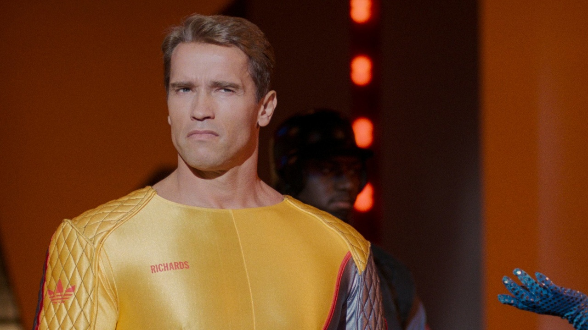

'80s science fiction films have a certain pattern they follow. That pattern is the set their movies 30 years into the future, often featuring dystopian societies and high-tech action. That has led many to think the future will be a bleak and dangerous place or something similar to "Blade Runner." However, that is not the case. The movie was set in 2017, and it is now 2025, and things haven't really changed much.
Arnold Schwarzenegger stars as Ben Richards, a former police helicopter pilot who is wrongfully convicted and forced to participate in a deadly game show where contestants must fight for their lives.
As a protagonist, Ben was a bit one-dimensional, but Schwarzenegger's charisma helped carry the role. Mostly. But he does get the job done. Although, I do believe Schwarzenegger is better off as an action star, whose minimal dialogue suits him. Something like James Cameron's "Terminator" films.
The plot itself is generic with predictable moments. This is a problem many films in the 1980s suffered. I don't know if it's just me, but I seem to be able to predict the plot for a lot of these kinds of movies. Maybe because I do this real moron thing called thinking.
Another character I feel like was underdeveloped was Amber Mendez (María Conchita Alonso). She was the typical damsel in distress, lacking depth and development throughout the film. At first, she doesn't like Ben, so she exposes him when he tries to flee with her, but eventually, she becomes an ally and a lover, only because she learns that he was telling the truth. Other than that, there's really no chemistry. The writers had to come up with an excuse to pair the two together romantically by the end of the film.
The only character that actually feels a bit developed is Damon Killian, the ruthless game show host played by Richard Dawson. He has a clear motivation and a memorable presence, which adds some depth to the otherwise shallow story. I only believe this because Damon was written just for Richard Dawson. If any of you were caught up on that man, he was the host of Family Feud from 1976 to 1985, and appeared as one of the celebrities on Match Game. In fact, I wouldn't be surprised if that's how Richard Dawson was in real life.
While writing this review, I learned that the movie was loosely based on a novel by Stephen King, which adds an interesting layer to its background. This is one of the many adaptations he hated. I don't blame him at all. This literally feels like an Arnold Schwarzenegger vehicle with his typical action hero persona. I'm not saying it's bad, but it certainly doesn't live up to the source material. This would've worked if it weren't a Stephen King story.